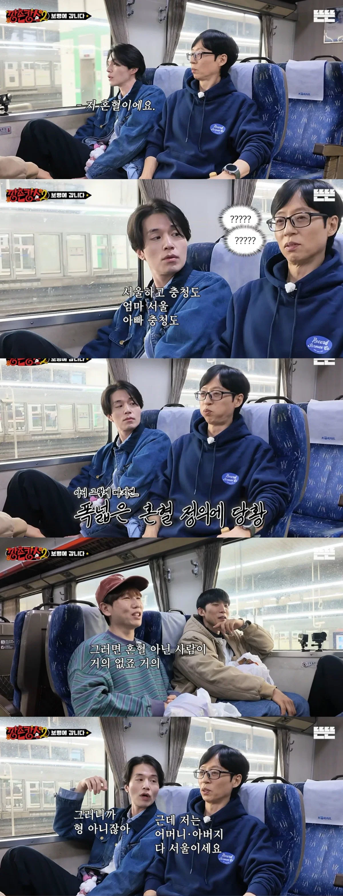
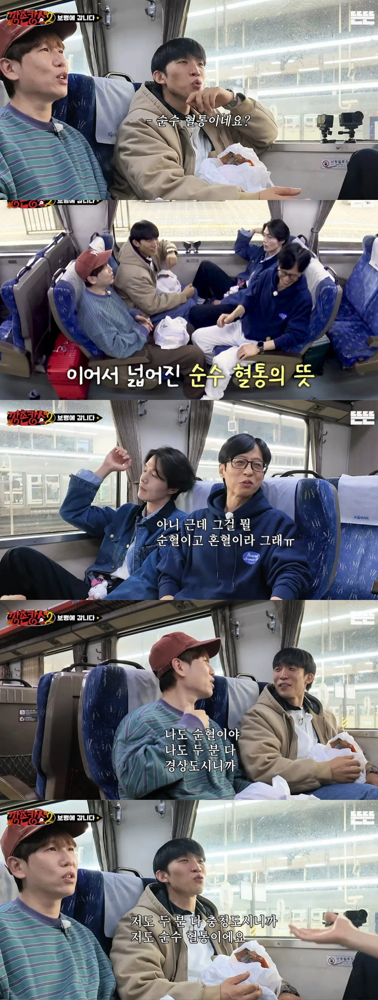
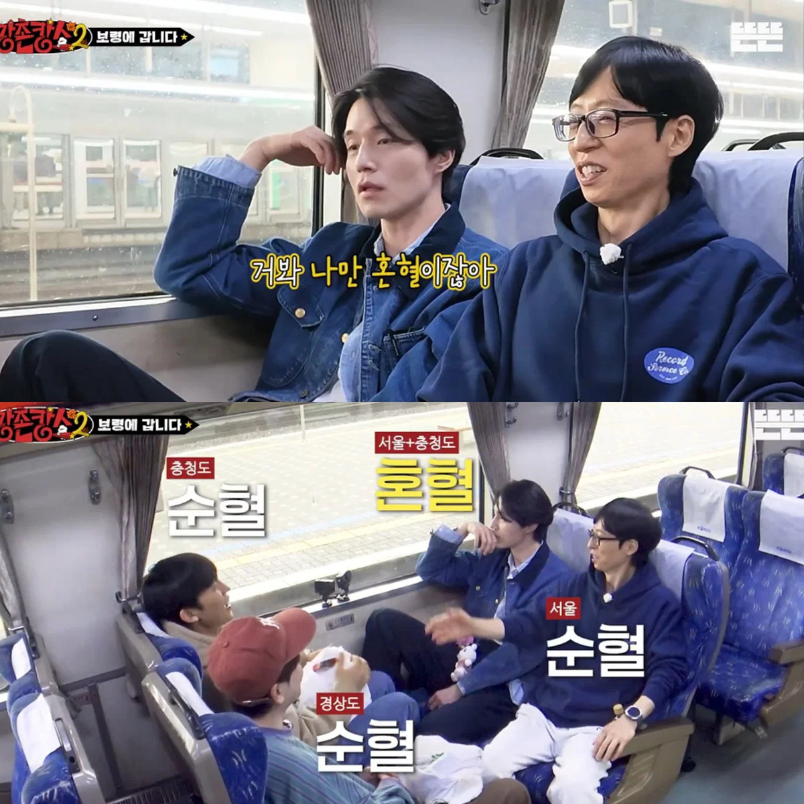

예전에 낙동강전선 안밀린곳만 순수 한국인 이라고 한놈 있었는데 미친놈이라고 생각함
임진왜란 따지면 함경도랑 전라도 빼곤 잡종인가
함경도는 여진족이 많았어서...
아니 낙동강쪽은 임진왜란때 털렸는디
그럼 평양성 이북으로만 순수 한국인이네ㅋㅋㅋ
유재석처럼 다리 지그재그 좀 해주지 ㅉㅉ 다리 모으면 개 불편한데
막짤에서 언듯보고 유재석이 이동욱 허벅지 만지는줄
어머
몽고 선생님들이 세번을 썼었습니다
오
나도 혼혈임 경상도 강원도
근데 옛날에 진짜 쉽지 않았다고 했음
자기 고향 정체성 애매모호한 사람 만나면 신기하긴 하더라
내가 그래 ㅋㅋ
타 지역끼린 외국인이라 생각하나보군
고려때이후로 전부 몽골이랑 혼혈아냐?
하 이동욱은 생긴것도 잘생겨서 유우머 센스까지 있네
세상 불공평하다!
나 경상도 전라도 혼혈임
ㅋㅋㅋㅋㅋㅋㅋㅋㅋㅋ